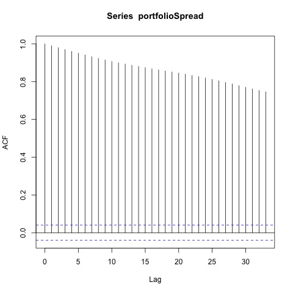
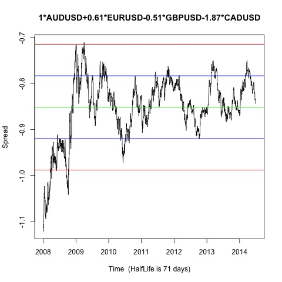
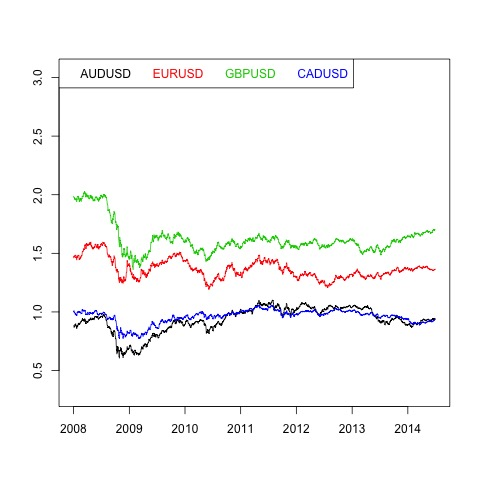

Johansen-Procedure "" "10pct" "5pct" "1pct" "r <= 3 |" 4.62 7.52 9.24 12.97 "r <= 2 |" 15.36 17.85 19.96 24.6 "r <= 1 |" 28.41 32 34.91 41.07 "r = 0 |" 49.94 49.65 53.12 60.16 "AUDUSD.l2" "EURUSD.l2" "GBPUSD.l2" "CADUSD.l2" "constant" "AUDUSD.l2" 1 1 1 1 1 "EURUSD.l2" 0.61 -2.12 0.59 -0.29 -1.05 "GBPUSD.l2" -0.51 1.21 0.7 0.28 -0.04 "CADUSD.l2" -1.87 -2.94 -2.56 -0.81 -0.12 "constant" 0.84 2.83 -0.39 -0.23 1.03
Augmented Dickey-Fuller Test p-value 0.0816222425204118  